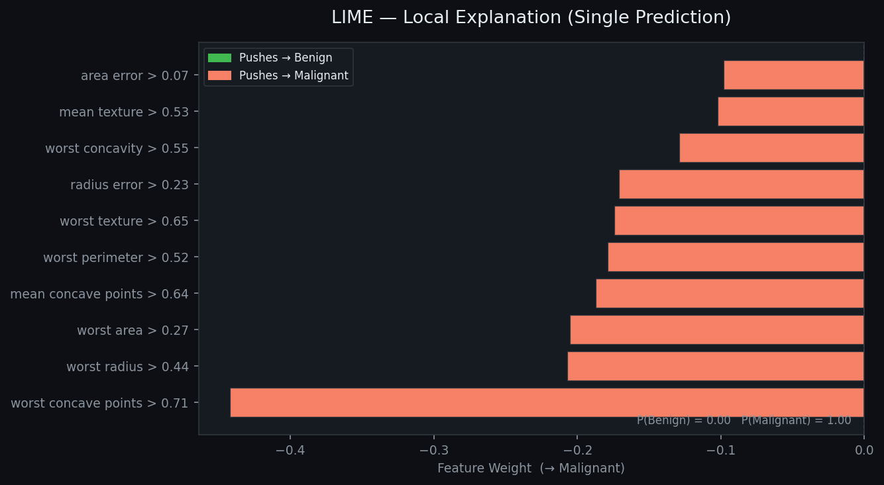
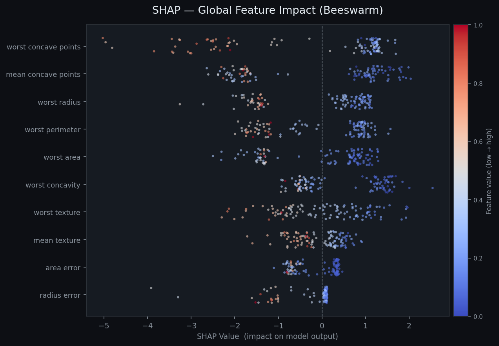
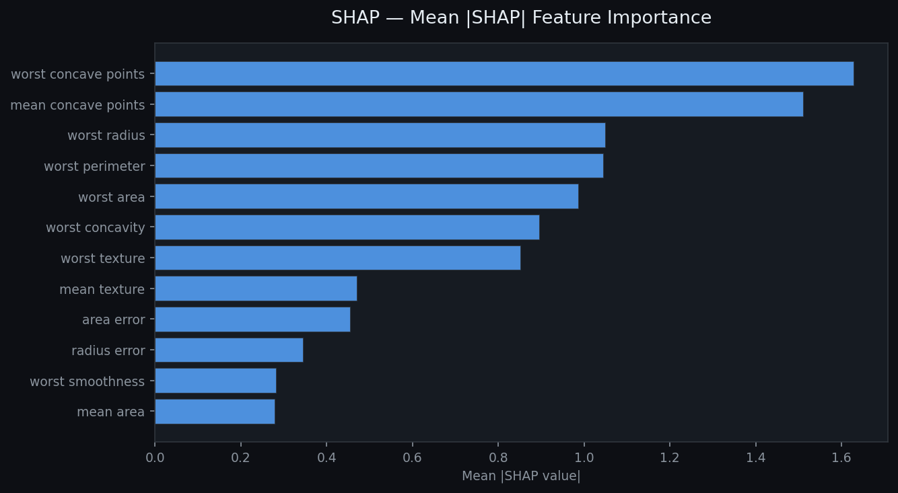
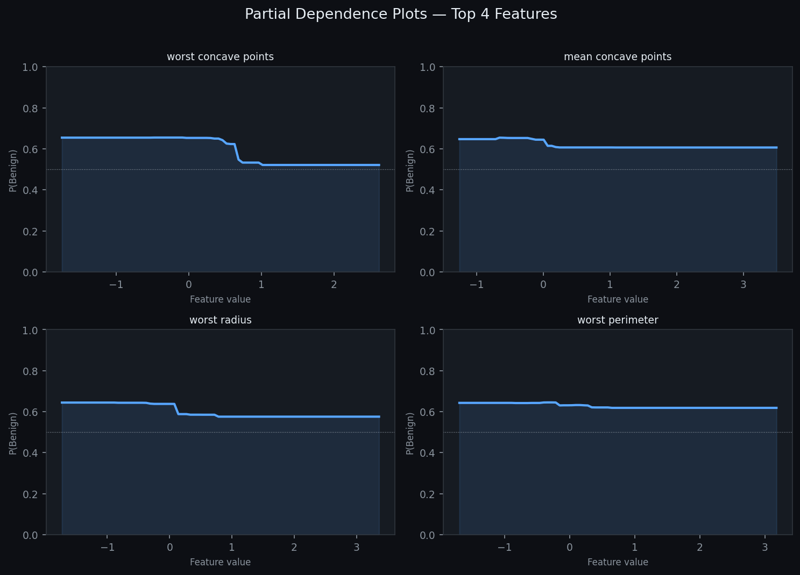

A hands-on exploration of LIME, SHAP, and Partial Dependence Plots — three complementary lenses for understanding what your machine learning model has actually learned.
LIME explains individual predictions by perturbing the input features and fitting a simple linear model in the local neighbourhood. It answers: "Why did the model predict this for this specific patient?"

SHAP is grounded in cooperative game theory. It assigns each feature a Shapley value — its fair contribution to the prediction, averaged over all possible feature orderings. Produces both local and global explanations.


PDPs show the marginalised effect of one feature on the predicted outcome, averaging over the distribution of all other features. They answer: "How does the model's average prediction change as I vary this feature?"

| Method | Scope | Model-agnostic | Theoretically grounded | Handles interactions | Best for |
|---|---|---|---|---|---|
| LIME | Local | ✓ | ~ | ✗ | Explaining individual predictions to stakeholders |
| SHAP | Local + Global | ✓ | ✓ | ✓ | Audits, feature selection, fairness analysis |
| PDP | Global | ✓ | ~ | ✗ * | Communicating feature effects to non-technical audiences |
| ICE | Global | ✓ | ~ | ✓ | Detecting heterogeneous effects (PDP extension) |
| ALE | Global | ✓ | ✓ | ~ | Correlated features where PDP misleads |
* 2D PDPs can show interactions between two features simultaneously.
import lime.lime_tabular # Build explainer once — reuse for any instance explainer = lime.lime_tabular.LimeTabularExplainer( X_train, feature_names=feature_names, class_names=['Malignant', 'Benign'], mode='classification', ) # Explain one test sample exp = explainer.explain_instance( X_test[0], model.predict_proba, num_features=10, ) # Render inline in a Jupyter notebook exp.show_in_notebook(show_table=True) # Or get raw weights weights = exp.as_list() # list of (feature_condition, weight)